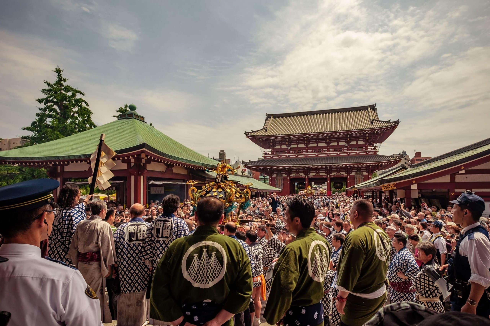

FESTIVAL
Gion Matsuri is arguably the biggest and most well-known festival in Japan. With a lengthy history that dates back to 869, it takes place over the whole month of July and culminates on July 17 with the Yamaboko Junko, a parade of floats.